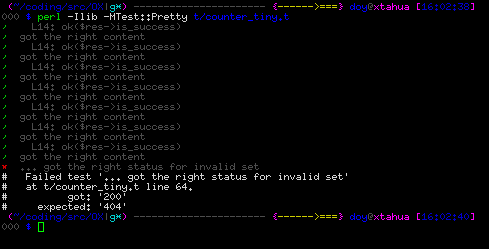
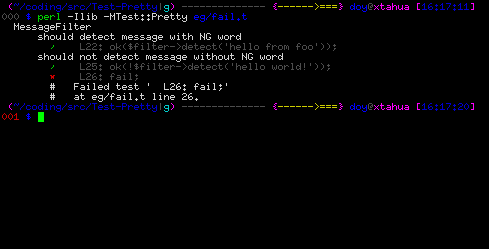

Better Testing
Moose is slow!
At least when testing. Moose's compile time speed isn't typically a problem when running things like web applications, since they only start up once, but tests frequently run many instances of the application in quick succession, and this can add quite a bit of time to the overall runtime of the test suite. This can in fact happen with a lot of different modules - Moose is just the most well known example, but any large module will have a similar effect.
If you look at what's actually happening though, all of this extra time is spent doing the same thing. The same code is loaded at the start, and then only after compilation is finished do things start to diverge (to run the actual tests themselves). There's no reason that the code that runs for use Moose should need to run multiple times during the test suite, since it always does the same thing, and so a lot of time could be saved by loading modules fewer times.
Test::Aggregate
In the past, people have attacked this problem by combining test files into fewer, bigger ones, or by using something like Test::Aggregate to automate this process. This is error-prone, because a lot of times tests can have global effects - installing subs into packages, creating classes, etc. We really do want tests to run in separate environments, to avoid allowing them to interfere with each other.
App::ForkProve
App::ForkProve solves this problem. It is a wrapper for App::Prove, which allows you to preload modules, and then instead of running each of the test files via fork and exec, it runs them via fork and eval. This way, the preloaded modules are already loaded in the current interpreter, and so when the test files are run, the use statement is just a no-op.
This actually works remarkably well - the OX test suite takes 30 seconds to run make test on my laptop, which decreases to 14 seconds under prove -rj5 -l t (since it runs the tests in parallel on multiple processors), but forkprove -rj5 -l -MOX -MOX::Request -MOX::Response -MOX::RouteBuilder::Code -MOX::RouteBuilder::ControllerAction -MOX::RouteBuilder::HTTPMethod t runs in just 3 seconds.
Tips and tricks
That command line did get a bit long though, and it's hard for people who aren't the developer to know what things are useful to preload. It may be useful to provide a module along with your test suite that does the job of loading all of the useful modules, so you only have to specify a single -M option. For instance, here is the contents of t/Preload.pm in the OX repository:
1: | package t::Preload; |
Now, you can just run forkprove -rj5 -l -Mt::Preload t to get the same effect.
Another useful trick is that since forkprove is entirely compatible with prove except for the -M option, you can replace prove with forkprove entirely, by adding an alias to your shell configuration:
alias prove="forkprove"This way, prove will continue to work as it always has in the past, but if you specify any -M options, they will be preloaded.
Caveats
This isn't entirely free, however. One obvious place where this would cause problems is in test files which test to make sure certain modules don't get loaded in certain situations. If you preload those modules, those tests will start failing.
In addition, since the tests are running from forkprove itself, any calls to Carp::confess or similar will report a longer stacktrace than they would otherwise, because all of the App::ForkProve machinery is actually still on the call stack. This is not typically a problem, but can potentially cause failures if you are relying on matching the entire stacktrace in a test.
TAP is ugly!
So now we have our tests running nice and quickly, and we make a change in our actual code, and it causes some tests to fail. The trouble is, the actual causes of the failures can be obscured by all of the prove output, especially if it's running in parallel. It'd be nice to have an easily skimmable output that makes it much more apparent what is wrong.
A typical solution here is to run prove -l t, see the list of failures at the end, and run the test files individually with perl -Ilib t/failing-test.t. This isn't great though, since raw TAP isn't the easiest thing to read. Additionally, if your tests don't have descriptions, it can be quite hard to find the test you're looking for.
Test::Pretty
Test::Pretty modifies the TAP output in order to make it a lot more pleasant to read. It adds colored output, automatically generates a test description based on the line number and contents of tests if they don't have one. For instance:
In addition, it cleans up the output of subtests to make them easier to follow:
Tips and tricks
Another shell alias can make using this easier:
1: | function t { |
This way, t t/foo.t will run the given test file, using blib if appropriate.
See Also
 This article contributed by: Jesse Luehrs <doy@tozt.net>
This article contributed by: Jesse Luehrs <doy@tozt.net>